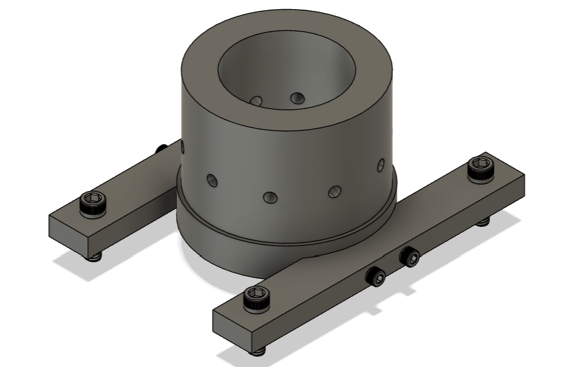

Projects
Purdue Space ProgramNX, Fusion 360 CAD and CAM, ANSYS & CNC machineryPurdue Space Program: Liquids is developing the Crater Maker Special, a bipropellant rocket with an expected apogee of 65,000 feet. I have taken part of the team on both the structures and manufacturing team to design, simulate, test, and manufacture critical rocket components. First, I lead the development of the launch lugs. The launch lugs are the interface between the rocket and the rail, and these must be able to handle the loads of the rocket, be adjustable, allow for portability, and be aerodynamic. Working as a team, we designed two sets of lugs in NX, simulated the parts using mesh convergence in ANSYS, and are now set to manufacture using CNC machinery. Another project I have led is the design and manufacturing of the mini-helium tube connectors. Our team is testing the load paths of a miniature/scale helium tube to determine the best composite structure, reliability, and strength of the helium tube portion of the rocket. To do this, our team designed in Fusion 360 and manufactured using the HAAS VF-2 CNC mill. Among other projects I have worked on in PSP-Liquids, is fin-can connections and interfacing with Liquid Oxygen bulkhead. Proper alignment and strength was crucial here in order to maintain rocket integrity.
Textron AviationCATIA V5, ENOVIA V6 & ExcelI interned in the summer of 2023 for Textron Aviation in Wichita, Kansas as a Special Missions Airframe Design Engineer. The first project I tackled was developing engineering efficiency materials for a newly contracted project. In doing so, I coordinated with people of all disciplines, including manufacturing technicians, electrical engineers, processes and materials, and the electromagnetic analysis team. Following this, I developed 10 outer mold line parts to be attached to the aircraft. I created technical engineering drawings and prepared the models for 3D printing using CATIA V5. And by the end of the summer, the parts were 3D printed. In addition, I extracted crucial part surfaces from the master file provided by the customer. These were then distributed and used by the engineering team. Throughout the summer, I continued to make sustainment revisions to Engineering Bills of Materials and drawings. These were done by evaluating material reliability, coordinating with vendors, dimensioning and tolerancing, and improving structural integrity.
Purdue Mechanical Engineering Machine ShopMills, Lathes, & Other Advanced MachineryI began working in the Purdue Mechanical Engineering Machine Shop in the fall of 2023. In this position, I learned a great deal about the importance of quality, detail, and design for manufacturing. As a manufacturing assistant, I worked to help students, researchers, and faculty create their ideas from a block of stock. Working in the shop has allowed me to build a strong foundation in using advanced machinery, allowed me to work on a variety of projects, communicate my own ideas, and mentor students along the way.
Purdue American Society of Mechanical EngineersGoogle Sheets, Javascript, Leadership & External/Company RelationsIn the spring of 2023, I was appointed by the Purdue American Society of Mechanical Engineers body to be the Director of Industrial Relations after one semester serving on the Industrial Relations team. As the Director of Industrial Relations, I have responsibility for leading the student organization, growing club impact, managing sponsors and external relations, developing relationships with alumni, holding professional development events, leading a team of 5 engineers, and mentoring club members. In addition, as part of my project management plan, I created a spreadsheet that is modeled off the Kanban method. The spreadsheet uses Javascript to automate the organization of tasks and help to distribute tasks to the team.
College of William & Mary, School of Computer ScienceGo Programming Language, Github, Software Development & Computer EngineeringDuring the summer of 2022, I tackled a research position through the College of William & Mary, School of Computer Science in Williamsburg, VA. I had the opportunity to work with Dr. Yifan Sun to develop multi-GPU (Graphical Processing Unit) simulation software. The software that Dr. Sun and I developed a cycle based solution to produce crucial computing statistics at both the compute unit and SIMD specific level. In addition, the results create a visual breakdown as a CPI (cycles per instruction) stack to allow for easier performance scrutinization. During my time working with Dr. Sun, I utilized the Go Programming language and Github to create this efficient solution.
Purdue University: School of Electrical and Computer EngineeringPython, Jupyter Notebook & TeachingAs an Undergraduate Teaching Assistant in the Data Science Labs, through the school of Electrical and Computer Engineering, I developed technical skills through Python, Github, and Jupyter Notebook. Beyond that, I improved my communication, leadership, and teaching skills in this position. When I was a TA, this was only the second or third semester offering the class to Purdue students. Thus, there was a large learning curve full of debugging both hardware and software as problems would arise. While sometimes frustrating, I learned lots about Raspberry Pi Microcontrollers and got my first use of Jupyter Notebook.
Steel City CodesPython, Java, Computer Science & Data ScienceBefore I was appointed Director of Curriculum, I taught Python and Java weekly classes at various levels of difficulty through Zoom. During this summer, I improved my technical programming skills, communication, teaching, and leadership skills. I was then selected as Director of Curriculum and took on more responsibility in developing material for the weekly classes that Steel City Codes offered to students around the world. Our team developed and grew the organization's impact by developing computer science and data science learning materials through Java and Python.
Misc. ProjectsHTML, CSS, Javascript, C++, Java, Linux, MATLAB, CMy most recent personal project has been this portfolio website. I have improved my HTML, CSS, and Javascript skills; as this website was created from scratch using these tools. I have also developed bolt sizing algorithms based on shear and tension calculations in MATLAB. Lastly, based on class projects, hackathons, and other coding challenges, I have experience with Java, C, C++, and Linux.
Gallery
CNC Mill — CATIA V5

Testing Assy — Fusion 360

Launch Lug & Aero-cover — NX
Flange — CNC Mill

Lego — Fusion 360

Launch Lug — Ansys FEA

Bolt & Nut — Manual Lathe

Hammer — Manual Lathe, Manual Mill

Laundry Hook — Sheet Metal Brake

Bed Side Table — Mill, Sheet Metal Brake

Minesweeper — C++

Portfolio — HTML, CSS, JS

ASME Project Tracker — JS
Explore my experience to see more about each position/organization.